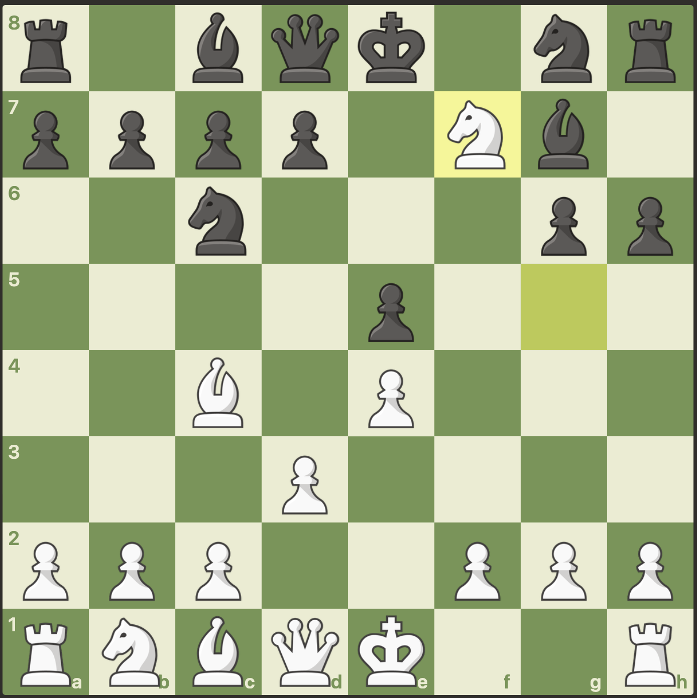
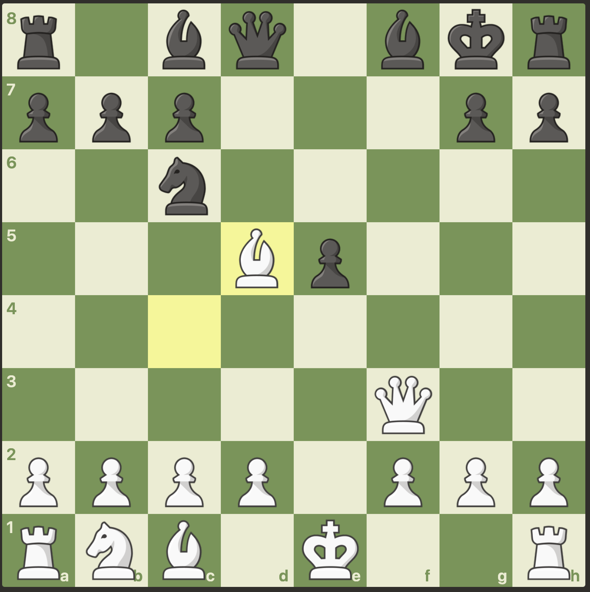
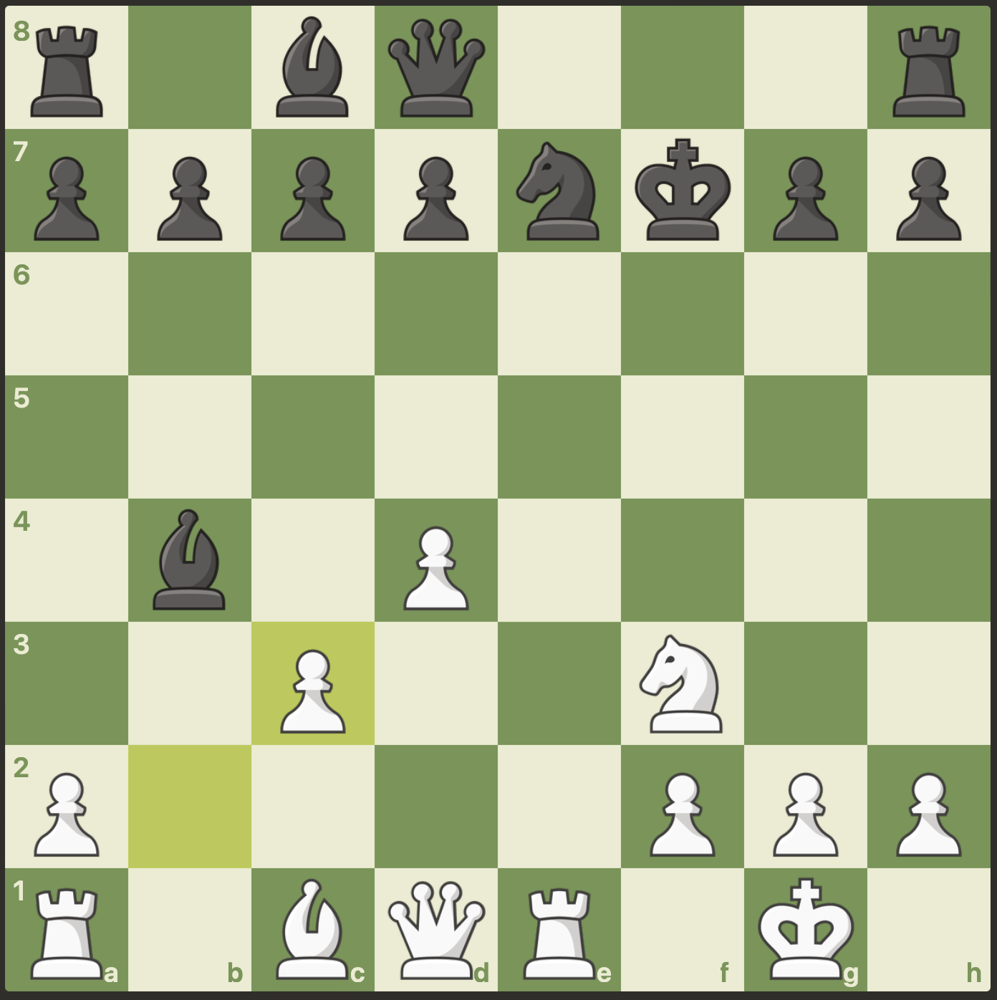

I wanted to find out how different LLMs would react and perform when presented with a game of chess. I did this over a year ago and it started hallucinating quickly, so now I wanted to see if anything has changed. I started with GPT-4.
GPT-4
Me: Let’s play chess
GPT-4: Absolutely! I’d be delighted to play a game of chess with you. I’ll set up the board. You can choose to play as white or black. Just to clarify, playing as white means you’ll make the first move. Which do you prefer?
Me: I’ll play white
Now, it loaded a python app to load the game, so I was hopeful that it could be a real game.
GPT-4: The board is set up in the standard starting position, with each player having eight pawns, two rooks, two knights, two bishops, a queen, and a king. Your pieces as white are on the two bottom rows, and mine as black are on the top two rows.
The board squares are named from “a” to “h” horizontally (from your left to right) and from “1” to “8” vertically (with “1” being the row closest to you). Your pieces are arranged as follows: Rooks on a1 and h1, Knights on b1 and g1, Bishops on c1 and f1, Queen on d1, and King on e1. Pawns fill the second row from a2 to h2.
Let me know your first move using the standard chess move notation (e.g., “e4” for moving the pawn in front of the king two squares forward).
Me: e4
GPT-4: You moved your pawn to e4. I’ll respond with a classic defense. Pawn to e5. Your move!
Me: nf3
GPT-4: You’ve developed your knight to f3, attacking the e5 pawn. I’ll counter by developing my knight as well. Knight to c6, defending the e5 pawn. Your move!
First couple moves have gone OK.
After 6 moves, it made its first mistake.

GPT-4: Your knight captures on f7, delivering a check to my king and threatening various pieces simultaneously, including my rook on h8. This is a bold and aggressive play! I’ll take the knight with my king. King takes f7. Your turn!
Me: you cannot take the knight, it’s guarded
GPT-4: You’re right; my oversight there. The knight on f7 is indeed guarded by your bishop on c4, making it unsafe for my king to capture the knight directly. Let’s adjust my move accordingly.
Given the situation, I’ll respond differently to address the threat your knight poses. I’ll move my rook to f8 to protect the f7 square more securely. Your move!
Me: your knight is blocking the rook from moving there
GPT-4: Indeed, my apologies for the oversight. The knight on c6 does prevent the rook from moving to f8. Let’s correct the scenario once more, considering the actual position on the board.
Given the current threat and position, a prudent move would be to address the immediate threat your knight poses. I’ll play Queen to e7 to protect the king and add an extra defender to the f7 square.
Now, it’s your move!
I thought when GPT loaded up Python, it was going to play like a grandmaster. But within a few moves, it proved it’s obviously not there yet.
I continued the game, correcting in when it had an oversight here or there. It often tried to move pieces to squares where there were already other pieces, or just illegal moves. Eventually, after me getting significantly ahead, it just could not make a legal move, so I quit. Let’s move on to Mistral.
Mistral
Me: Let’s play chess
Mistral: Sure, I’d be happy to help you play chess! As a text-based assistant, I can’t provide a visual chessboard, but I can certainly help you understand the game, make moves, and provide some strategy tips.
Here’s how we can play:
You’ll tell me your move in standard algebraic notation (e.g., e4, Nf3, etc.) I’ll tell you my move in response. We’ll continue like this until the game is over. You’ll be playing as white, so you get to go first. Please enter your move!
Me: e4
Mistral: A great choice! The pawn to e4 is a common opening move that allows you to control the center of the board.
In response, I’ll play e5, matching your pawn move and also staking a claim in the center.
Your turn again! Please enter your next move in standard algebraic notation.
Me: Nf3
Mistral: Another solid move! By developing your knight to f3, you’re attacking my pawn on e5 and preparing to castle kingside.
In response, I’ll play Nc6, developing my own knight and attacking your pawn on e4.
Your turn again! Please enter your next move in standard algebraic notation.
It didn’t make an illegal move here, but it’s reasoning of “attacking your pawn on e4” is incorrect. Despite this slip up, it moved on making legal moves, and even followed a typical chess opening.
But, it did make worse moves after a few more moves, and when I was two moves away from a checkmate, it started to hallucinate, both with illegal moves, and when it was explaining what was going on on the board and why it was doing what it was doing.

Claude - Sonnet
Claude started by telling me how it didn’t have the capability to play, but when I made my first move, play it did.
Me: Let’s play chess
Claude: Unfortunately, I don’t have the capability to actually play a full game of chess. As an AI assistant without a physical form, I can’t make moves on a chess board. However, I’d be happy to discuss chess strategy, famous games, openings, tactics, and other chess-related topics if you’re interested! I have a strong understanding of the rules and principles of chess.
Me: I go e4
Claude: Sure, let’s start a game! With the move e4, you are playing one of the most classical and popular openings in chess - the King’s Pawn Opening.
My response would be:
e5
This is known as the Open Game or Double King’s Pawn Opening. It leads to an open position in the center with both players fighting for control of the e4 and e5 squares. Some possible continuations could be:
- e4 e5
- Nf3 Nc6
- Bb5 (The Ruy Lopez)
Or:
- e4 e5
- Nf3 Nc6
- Bc4 Bc5 (The Italian Game)
Or even:
- e4 e5
- Nf3 Nf6 (The Petrov Defense)
There are many possibilities and rich theory behind this opening. I’d be happy to discuss and analyze further moves if you’d like to continue the game! Let me know your next move.
Interesting. It’s not only trying to play, but teach at the same time. And it continued to do this after every move. Even though all LLMs probably have a lot of chess theory in their databases, out of these three, it seems like Claude is putting it to the best and most practical use, understanding openings and strategy better than the others. Eventually…
Claude: Got it, you’ve played:
- e4 e5
- Nf3 Nc6
- Bc4 Bc5
- c3
Continuing with one of the main lines of the Italian Game/Giuoco Piano opening.
As Black, I will develop the knight to its natural square with:
4…Nf6
This develops the piece to an excellent square, defends the e5 pawn, and prepares to castle. After 0-0, Black will try to undermine the center with …d6 and …c6 pawn breaks.
Some main continuations could be:
- d3 O-O
- O-O d6
- Bg5 c6
Or White could keep more tension with:
- d3 O-O
- Bg5 d6
- Nd2
Please make your 5th move as White so we can explore this classical opening further!
I found it pretty cool how it recognizes the classical opening, especially because it’s what I used to typically play when I was younger. Let’s see how far it gets.
By the 10-15th move, it started to hallucinate a little bit. But it definitely outperformed GPT-4 and Mistral and followed the opening for a while, and then made some non-book moves that were legal, all while explaining what each move for each side does, and multiple possible continuations after every move. Though it couldn’t make it through a whole game, I am still thoroughly impressed.
